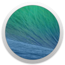

OS X Mavericks
Apple · OS X 10.9, 2013
OS X Mavericks (10.9, October 2013) was the first Mac release named after a place in California instead of a big cat: Mavericks, a surf break near Half Moon Bay, whose wave became the desktop picture. It was also the first OS X Apple gave away for free.
It kept the glass dock and the glossy traffic lights, but took the stitched leather and torn paper out of Calendar, Contacts and Notes. A year later Yosemite made everything flat.
What made it special
- Finder tabs and tags: several folders in one window, and coloured tags on any file.
- Maps and iBooks came over from the iPhone.
- A menu bar on every display, and full screen on one screen while the other stays a desktop.
- App Nap and compressed memory, so a MacBook lasted longer on a charge.
ⓘ Did you know…
Out of cats. At the launch Apple joked that it had run out of big cats; the next ten years of releases took their names from California.
Free. Mountain Lion had cost $19.99. Mavericks cost nothing, and every OS X since has been free.
The last gloss. Mavericks is the last OS X with the glossy Aqua buttons and the 3D glass dock before Yosemite flattened them in 2014.